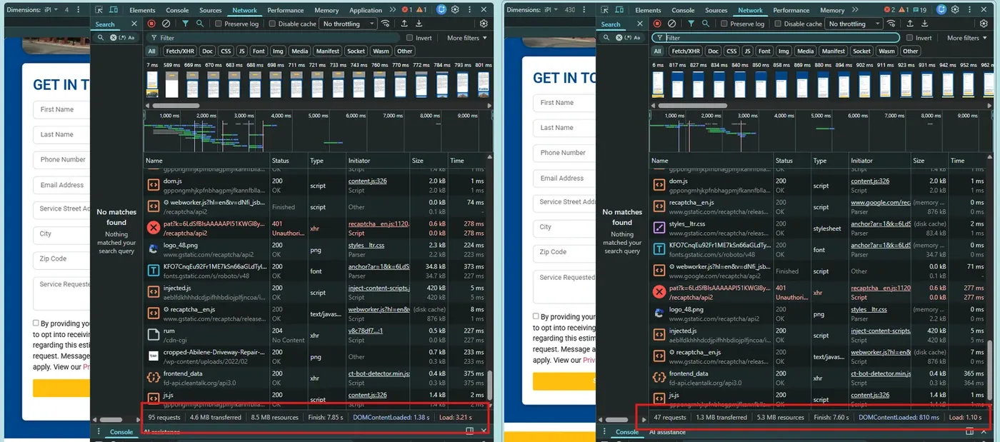
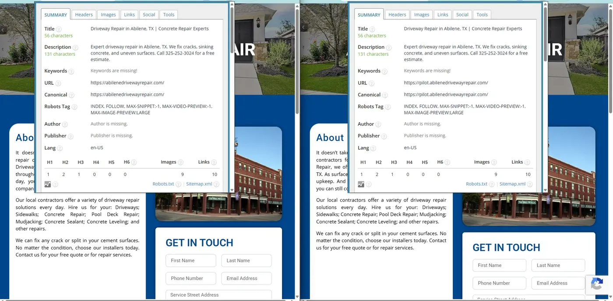
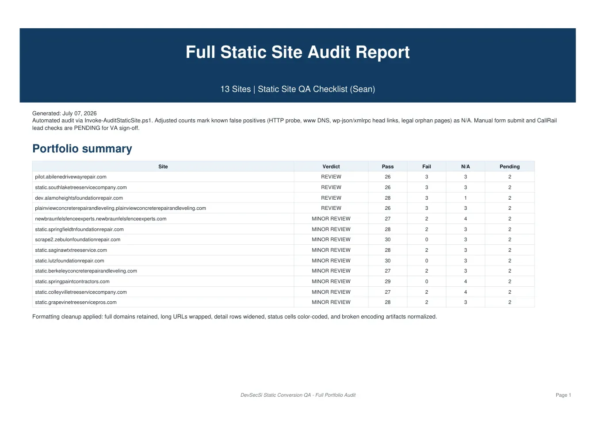
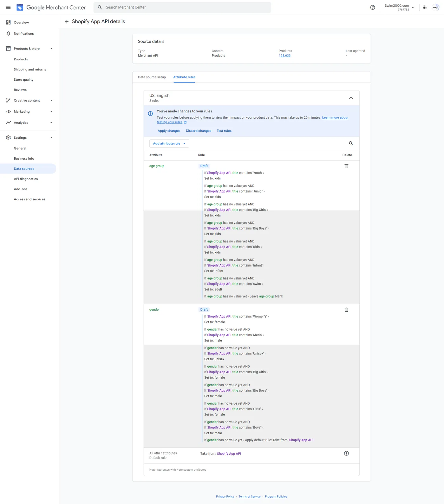
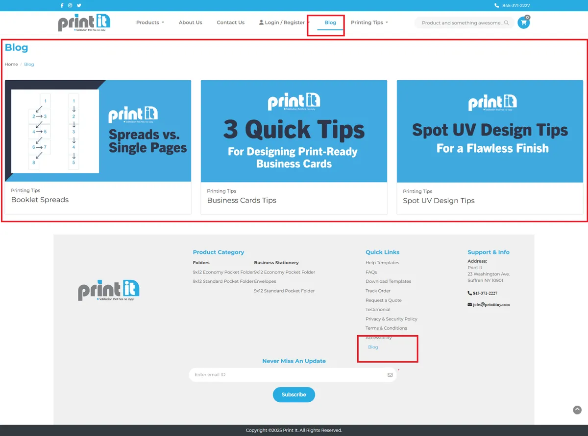
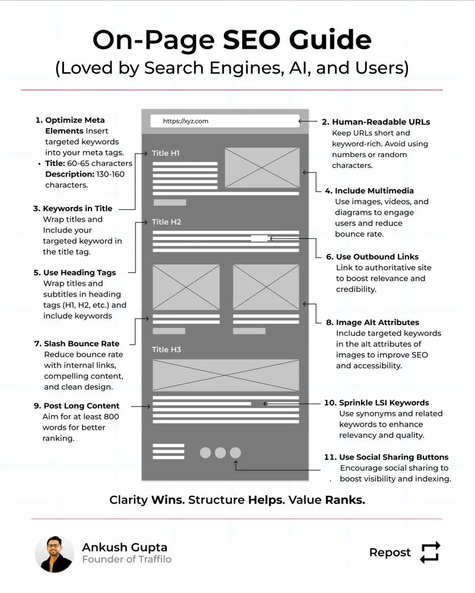
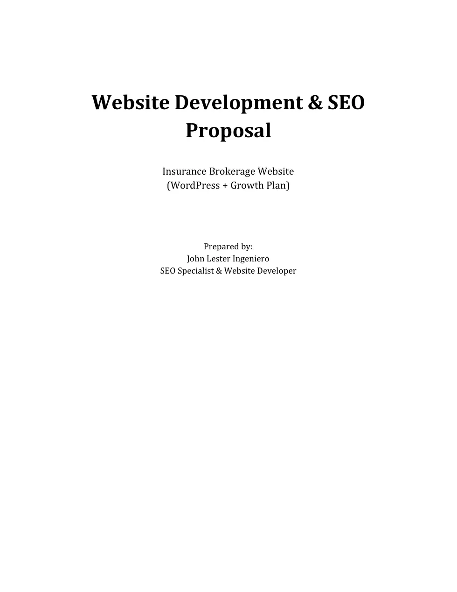

Technical & on-page SEO
Indexation control, sitemap/robots hygiene, internal linking, SERP-aligned templates, and keyword systems for competitive local and national queries.
Available for hire · SEO · WordPress · Static conversion
I help agencies and operators grow organic traffic without breaking WordPress ops.
Senior SEO Specialist and WordPress Developer with 5+ years shipping technical SEO, multi-site care, and WordPress → Cloudflare static conversions that keep rankings, forms, and CallRail intact.
Capabilities
I own the full loop from crawl health to publish workflow — including converting WordPress origins to fast static edge delivery without breaking SEO or lead capture.
Indexation control, sitemap/robots hygiene, internal linking, SERP-aligned templates, and keyword systems for competitive local and national queries.
Theme work, performance hardening, and WordPress-to-static pipelines on Cloudflare (Workers, R2, KV) with forms, schema, and CallRail preserved.
Hosting, DNS, SSL, backups, caching, and uptime discipline — the operational layer that protects rankings and conversion paths.
Project portfolio
Screenshots, metrics, and PDFs from real engagements — so hiring managers can evaluate delivery quality quickly.

Converted live WordPress sites to Cloudflare-served static mirrors while preserving SEO signals, schema, HTTPS, and CallRail form tracking — then documented live vs static performance in a formal case study.
Achieved



Ran full static-site QA across a 13-property local-services portfolio — crawl health, robots/sitemaps, canonicals, KV cache, wp-admin blocks, forms, and on-page SEO checks.
Achieved

Google Merchant Center SEO audit for a large swimwear catalog — feed quality metrics, missing attributes, category mapping, and a prioritized action plan.
Achieved

Produced SEO title and meta description sets for a large commercial printing catalog — standardized length, intent, and brand phrasing across product URLs.
Achieved

Built a keyword research and competitive gap pack for dental/surgical product SEO — URL inventories, KD/volume shortlists, and mapped opportunity keywords.
Achieved

Scoped a full WordPress build with ZIP-based lead routing, agent recruitment pages, Formidable Forms, and a phased SEO growth plan for an insurance brokerage.
Achieved
Evidence room
Case-study screenshots, audit PDFs, and on-page materials are linked from the cards above. More past-work files live in Drive — or we can walk through outcomes live.
Ready to hire
Looking for someone who can own technical SEO, keep sites healthy, and ship static conversion when WordPress performance is the bottleneck? Book 30 minutes — I’ll bring relevant case work and we can assess fit quickly.